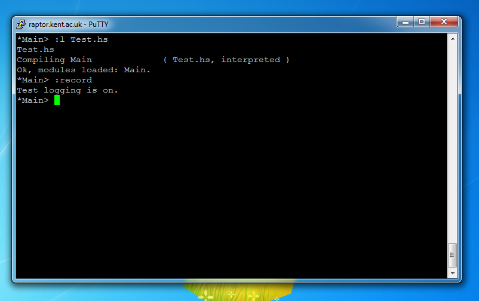
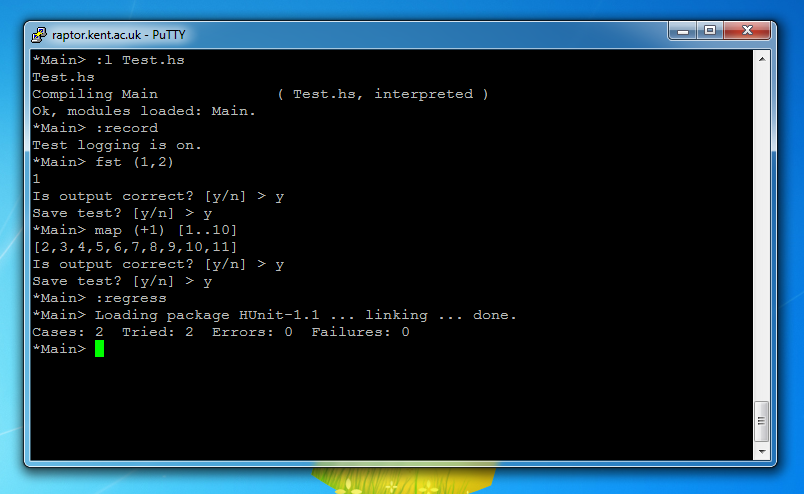

1) Load starter Haskell file by executing the command ":load Test.hs"

2) Turn on recording by entering the command ":record"
3) Execute the function "fst (1,2)"
* Check that output is correct, then save test.

4) Execute the function "map (+1) [1..10]"
* Check that output is correct, then save test.

5) Execute regression test by executing the command ":regress"
